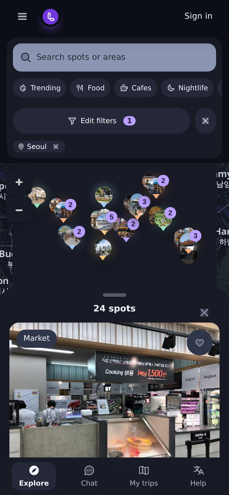
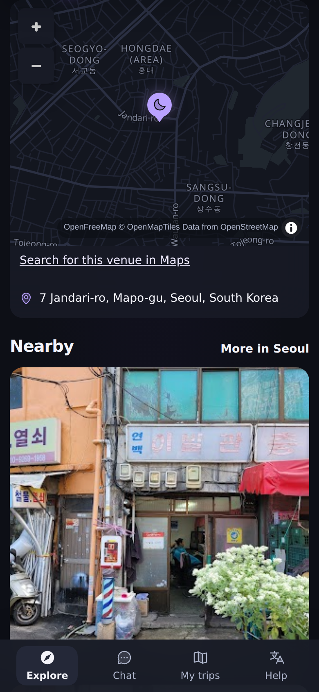

Google photos are live on localley.io
Phone width 390 px, live site, 2026-11-04. Release 9f5fd75 (PR #697).
- Map pins, spot cards and Nearby rows show the Google photo of each spot.
- 44 of 44 photo requests in this run returned an image. 0 failed.
- 3,197 of 3,304 spots have a Google photo. PR #698 adds 9 more spots that had only a place id.
- Cost guard: one billed photo call per spot and visitor a day, monthly cap stays at USD 24.50.

